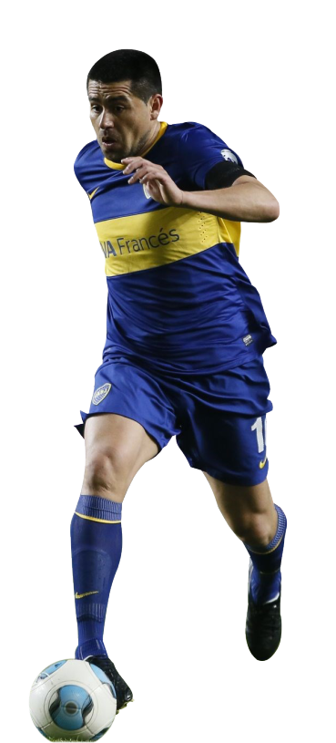
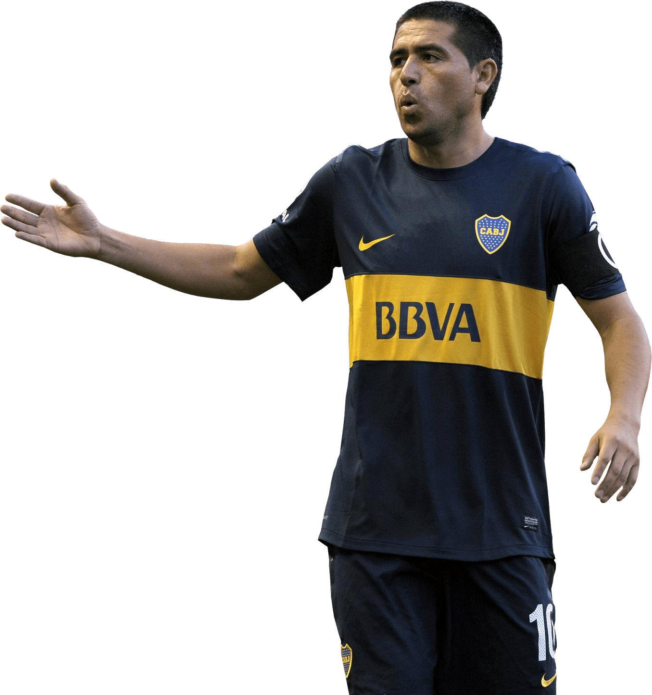
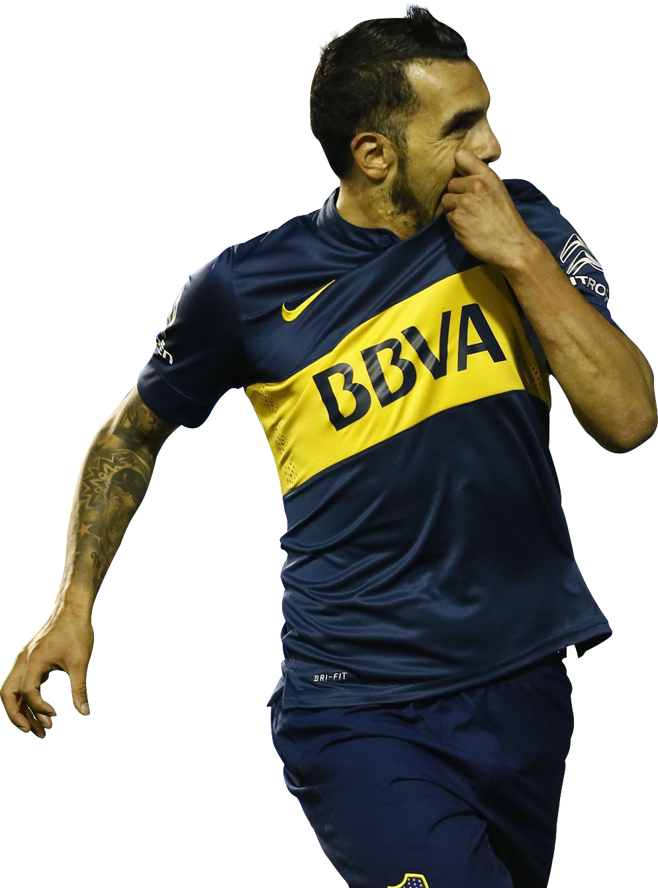
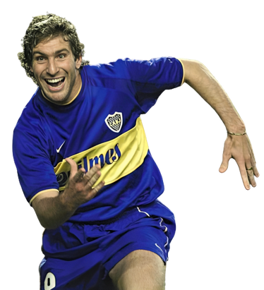
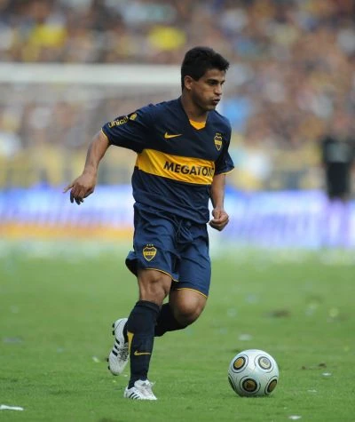
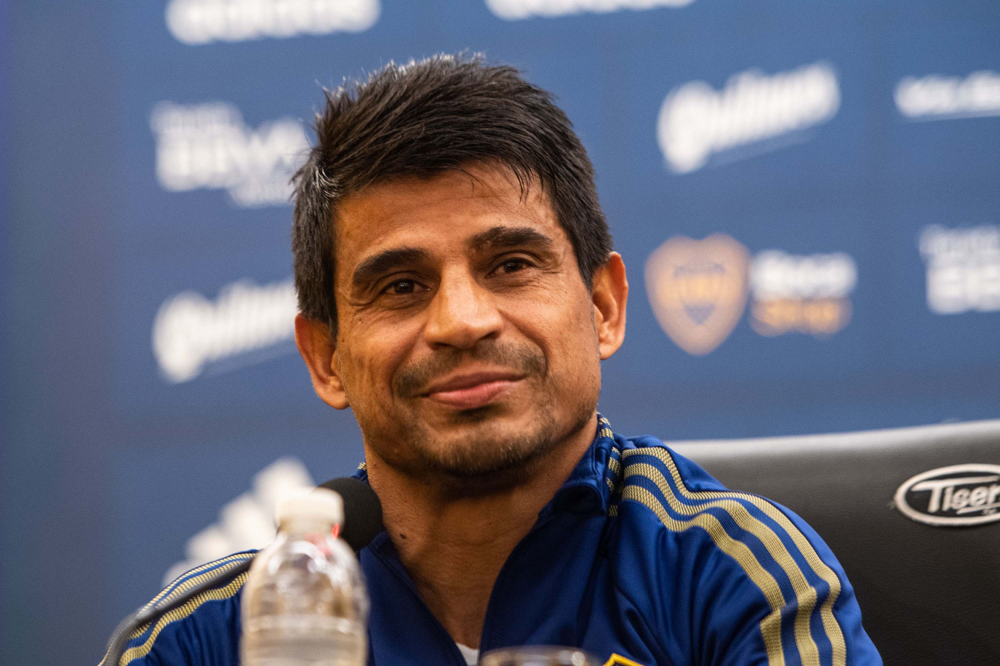

Maradona spent five years at Argentinos Juniors, from 1976 to 1981, scoring 115 goals in 167 appearances before his US$4 million transfer to Boca Juniors.Maradona received offers to join other clubs, including River Plate who offered to make him the club's best paid player. However, River decided to drop its bid due to its large payroll in keeping Daniel Passarella and Ubaldo Fillol.

Maradona signed a contract with Boca Juniors on 20 February 1981. He made his debut two days later against Talleres de Córdoba, scoring twice in the club's 4–1 win. On 10 April, Maradona played his first Superclásico against River Plate at La Bombonera stadium. Boca defeated River 3–0 with Maradona scoring a goal after dribbling past Alberto Tarantini and Fillol. Despite the distrustful relationship between Maradona and Boca Juniors manager, Silvio Marzolini, Boca had a successful season, winning the league title after securing a point against Racing Club. That would be the only title won by Maradona in the Argentine domestic league.

On 10 November 1996, aged 18, Riquelme made his Primera División debut in a 2–0 win against Unión de Santa Fe. Two weeks later, he scored his first senior goal in a 6–0 triumph over Huracán. After making his debut, Riquelme began a long journey to break a streak of no championships for the team since winning the Apertura 1992. In the 1996-97 season, Bilardo would be fired and replaced by Héctor "Bambino" Veira, but after Diego Maradona's second return to Boca, Román would be relegated from the first team. After almost obtaining the championship in the 1997-98 season, by July 1998 Veira would be replaced by coach Carlos Bianchi, who would fully trust Riquelme to command the team. Forming a successful trio in attack with winger Guillermo Barros Schelotto and center forward Martín Palermo, Boca would once again win a title after eight years, by becoming the 1998 Apertura champions undefeated. This would also earn the team a qualification for the 2000 edition of the Copa Libertadores, where Boca would make his return after six years. The season would be highly successful, with the team winning the 1999 Clausura and reaching a historic 40-game undefeated mark. Riquelme entered the South American Team of the Year for the first time, totaling 47 games played and 10 goals scored.
In the 1999-00 season, Boca became champion of America once again after beating Palmeiras in a penalty-shootout. Riquelme had an excellent performance during the competition, highlighting his match against rivals River Plate for the second leg of the quarterfinals, where he scored a goal, assisted in another, and made a historic play where he nutmegged from his behind to the River defender Mario Yepes. Boca's successes would continue in the 2000-01 season, winning the Apertura 2000. However, the highest point would be the final of the Intercontinental Cup against Real Madrid, who at that time was in the process of forming Los Galácticos, with the signing of the Ballon d'Or Luis Figo. Against all odds, Boca ended up winning the match, and Riquelme would be one of the stars assisting for Martín Palermo's second goal with a 30-meter ball, and controlling the pace of play in the last minutes, to which Madrid's defenders Claude Makélélé and Geremi couldn't hold back. During 2001, Boca would not obtain any local title, but would win again in the Copa Libertadores, defeating Mexican Cruz Azul in the finals again through penalties. This time Román would have an outstanding performance against Palmeiras in the semifinal series, where the Argentine midfielder managed to give an assist in the first leg and score a goal in the second leg. Riquelme would be chosen the MVP of the tournament, and would also win the South American Footballer of the Year award for the first time in his career. As the champions of Copa Libertadores his side faced 2001 UEFA Champions League winners Bayern Munich in the Intercontinental Cup final which ended in a 0–1 defeat for his club. The closing of the 2001-02 season, Riquelme's last in Boca, would not be as successful as the previous ones, the main cause being the departure of Carlos Bianchi in the summer of 2001, due to his differences with the president of the club Mauricio Macri. Riquelme would also have his differences with him due to the poor pay of his contract, to which Riquelme would demonstrate in a match against River Plate for the 2001 Clausura where he celebrated in front of the president's box, putting his hands to his ear in protest.
Carlos Tévez is the only, currently active one of the best footballers in the history of Boca Juniors. Nicknamed "El Apache", he joined the youth squad of Boca Juniors when he was 13 years old. Three years later, he made his debut in 2001–02 Argentine Primera Division. Before leaving Argentina, Tevez won Primera División, Copa Libertadores, Copa Sudamericana, and Intercontinental Cup alongside some individual awards like South American Footballer of the Year three times. He was 20 years old and already one of the favorite players of Boca Juniors fans. He used to wear number nine back then.

Tévez traveled the world and went to Brazil, England, and Italy before his sensational return to Boca Juniors in 2015. He had two great seasons with Juventus and he was on an excellent form. He had won the domestic double in Italy with Juventus in 2015. In the same year, he scored nine goals in 15 matches, having a big impact on winning the Argentine Primera División and Copa Argentina double with Boca Juniors. That's why he is the first footballer to win two domestic league and cup doubles in one calendar year. El Apache won three more Primera División after 2015. In his late career in Boca Juniors, Tévez won Copa and Supercopa Argentina. Despite he has missed lots of time away from Boca, Tevez is one of the most decorated and one of the best Boca Juniors players of all time. Some people consider him as the heir to the Diego Maradona throne, who is the idol of Tevez.
Martin Palermo is one of the craziest in the list of best Boca Juniors players of all time. He has many insane memories in football. The most notorious memory he has is actually a Guinness record for missing three penalties in a single match. He has done numerous good, crazy things, too. Once he scored a precious 40 meter header for Boca Juniors against Velez Sarsfield. It is also a Guinness book material because the ball bounced just once before hitting the net.
He has scored many insane long range goals, including his goal against Independiente which he was actually one step behind the mid line of the field. Palermo had his own journey in Europe and again, something crazy happened there, too. During a goal celebration at Villarreal, he jumped on a concrete wall to share the celebration with the fans, but the wall collapsed and broke Palermo's leg. In 2010, Palermo scored a vital late goal for Argentina that took them to the World Cup, where he scored another goal, making him the oldest Argentinian goal scorer in the World Cups. As one of the all-time greatest Boca Juniors players, Palermo spent ten years in two spells at Boca Juniors. He had 404 appearances in all competitions and scored 236 goals in them. Palermo surpassed Roberto Cherro record of 221 goals, mostly in the 1930s and he is currently the top all time goalscorer of Boca Juniors club with 236 goals.
Sebastian Battaglia started his football career in the Boca Juniors youth squad. He made his debut for the senior team when he was 18 years old. Soon, Battaglia became a regular starting lineup player for Boca Juniors. He won three major league titles with Boca Juniors, including 1999 Clausura and 2000 and 2003 Apertura. As one of the best Boca Juniors players of all time, Battaglia also won several other prestigious titles, like three Copa Libertadores, two Copa Intercontinental, and one Copa Sudamericana.

Battaglia, after a marvelous era with Boca Juniors, received offers from the European teams. His next station was Villarreal, where his fellow teammate Riquelme was. Riquelme was not the only former Boca Juniors player of Villarreal. Martín Palermo, Diego Cagna, Rodolfo Arruabarrena and Fabricio Coloccini were other players that went to Villarreal after playing for Boca Juniors. Battaglia didn't last long in Spain and after a season, he returned to his home. Boca Juniors was harvesting trophies, just like before Battaglia moved to Spain. The 2005, 2008, and 2011 Apertura and 2006 Clausura were the league titles won by Battaglia in Boca. Three championships in four years in the Recopa Sudamericana since 2005 made Boca Juniors the most successful club of the competition. Battaglia played in both legs of the 2007 Copa Libertadores Finals as a substitute. 2012 Copa Argentina was the last title Battaglia won. All these honors and trophies made Battaglia the most decorated and one of the best players in Boca Juniors history

As one of the best Boca Juniors players of all time, Hugo Ibarra was an icon at the club. He began his senior career at a second division club, Colon, which after his two first seasons, they promoted to Primera. He joined Boca in 1998, and in three seasons played in 85 games, winning the 1998 Apertura and the 1999 Clausura. In 2000 they won the Copa Libertadores and the Copa Intercontinental titles. After three successful years at Boca, which he always referred to as his home, he went to Europe and played for Porto. After a season with 20 appearances, he was loaned back to Boca for a season because he didn’t have a passport. They won another Copa Libertadores title. Then he went on loan to Monaco in the 2003 season, and then the Spanish RCD Espanyol. In Monaco, they reached the champions league final, beating Real Madrid and Chelsea. However, in the final they were defeated by Porto, ironically.
Nicknamed “El Negro” went back to Boca for another five years, playing in 124 games until retirement. In 2005 they won the Copa Sudamericana and the Apertura titles. From 2006 to 2010, they won another two Primera Division mid season titles, the 2007 Copa Libertadores, and the Recopa Sudamericana in 2008. As one of the best Boca Juniors players ever, he played in the Argentine international team and in 2007 went back as the captain, playing a friendly match against Chile.
